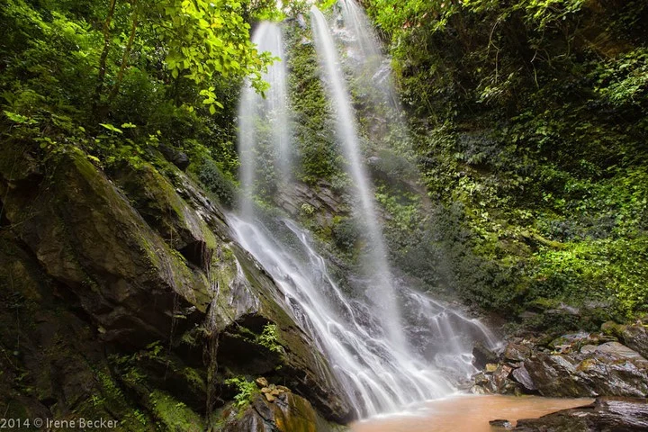
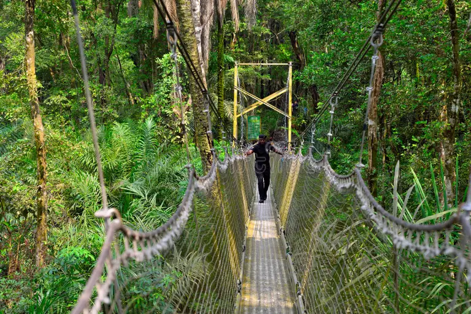
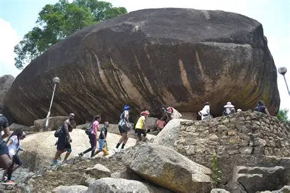
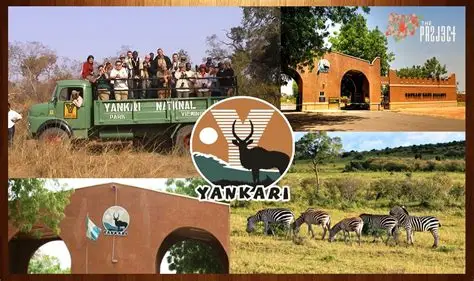
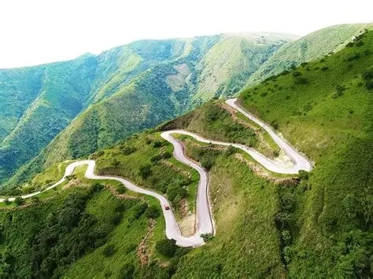
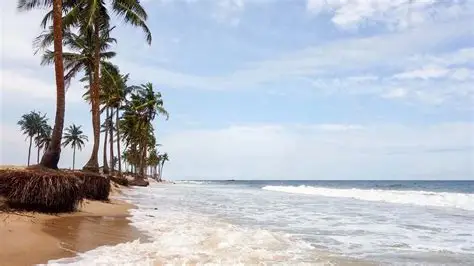

Nature · Osun State
Olumirin Waterfall
Enjoy a nature outing at Erin-Ijesha's waterfall, surrounded by greenery. Wear suitable walking shoes and check local conditions before travelling.

Nature · Osun State
Enjoy a nature outing at Erin-Ijesha's waterfall, surrounded by greenery. Wear suitable walking shoes and check local conditions before travelling.

Wildlife · Lagos State
Explore a protected natural area and its forest canopy walkway. Follow visitor guidance and respect wildlife and plants.

Culture and heritage · Ogun State
Learn about a landmark associated with Abeokuta's history and enjoy views over the surrounding city.

Wildlife · Bauchi State
Discover a protected area known for its savanna environment and wildlife. Check access and local visitor advice before travelling.

Nature · Cross River State
Take in highland scenery, rolling hills, and a quieter nature escape. Confirm transport and access details in advance.

Beaches and coast · Lagos
Plan a coastal outing and arrange reliable boat transport. Follow local water-safety guidance.
You have not saved any destinations yet.